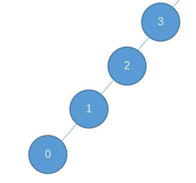
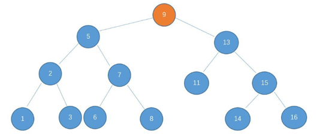
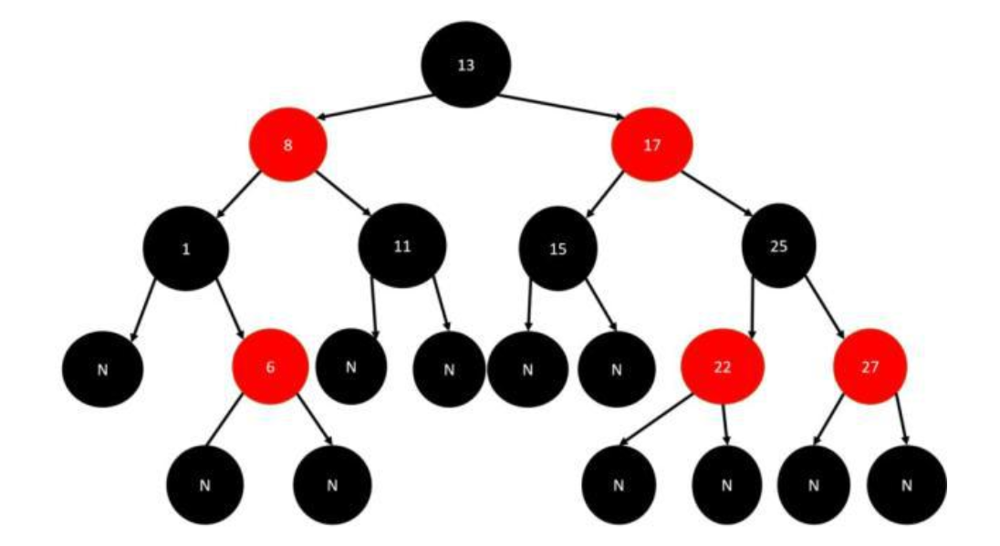
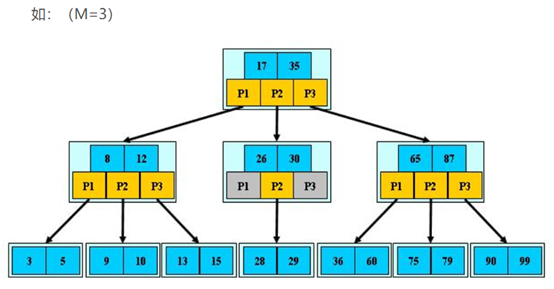
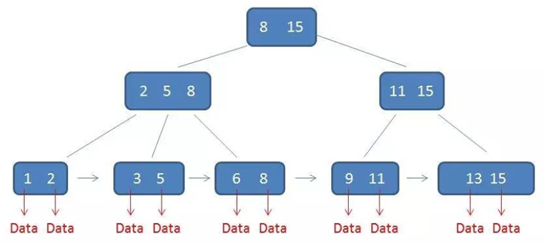

B树,B+和B-
二叉搜索树
二叉搜索树，BST（Binary Search Tree），即为特殊的二叉树。 对于二叉树的任意一个节点，其左子树中所有的值均小于该节点；右子树中所有的值均大于该节点。
二叉搜索树按照中序遍历的方式（左 - 中 - 右）得到的序列为从小到大的有序序列。
B数
二叉搜索树，树如其名，它在搜索一个值的时候表现很好，但是二叉搜索树有一个很大的缺陷就是它不稳定，它的时间复杂度是O(h) 树的高度。所以可能会出现这种情况：

这个时候，B树（二叉平衡树）出现了，如下所示：

二叉平衡树的特点：
（1）是二叉搜索树
（2）树所有的叶子节点的高度差 不为 1
红黑树
B树虽然能保持稳定的实际复杂度。但是它如果遇到增删操作比较多的场景。每次增删都要维护树的形状。这样也会造成额外的开销。
一方面我们是希望二叉搜索树有一个非常好的结构（最好平衡二叉树），另一方面我们不希望要经常维护这个树的结构。这个是互相矛盾的，这个时候折中就出现了（计算机中出现了很多折中的思想），红黑树出现了。

红黑树 是一个不严格的平衡二叉树。它有以下几个特征：
|
|
严格的平衡二叉树 要求节点之间高度不能超过1。这样会带来一些局限性。例如，插入操作很频繁。
如果应用场景中对插入删除不频繁，只是对查找要求较高，那么AVL还是较优于红黑树。
红黑树：是复杂的，但它的操作有着良好的最坏情况运行时间，并且在实践中是高效的。红黑树在插入删除的时候，左旋右旋的操作平均为3次（印象中的看到的数据，可能不准确）。
B-树
B-树是一种多路搜索树（并不是二叉的） ，它的目的是更快的查找。举例3路-B-树：

了解B-树是什么，需要了解两件事：
（1） 确定M 是什么（M是阶数，代表每次有几条路可选）
（2） 注意每一路是什么意思
例如：第一层，P1代表少于17的数。P2表示17~35之间的，p3表示大于35的
B+树
B+树是在B-树的基础上提出来的，B-树多用于文件系统，但是用于数据库的时候，经常会遇到区间查找的问题。这个时候B+树出现了。

B+树核心特点：
（1） 每一次只存子孩子中最大或最小的数 （最后一层才是真正的数）
（2） 最后一层用链表连接起来 （方便区间查询）
总结：
B-树：非关系型数据库的索引实现，如MongoDB
B+树：关系型数据库的索引实现，如Mysql